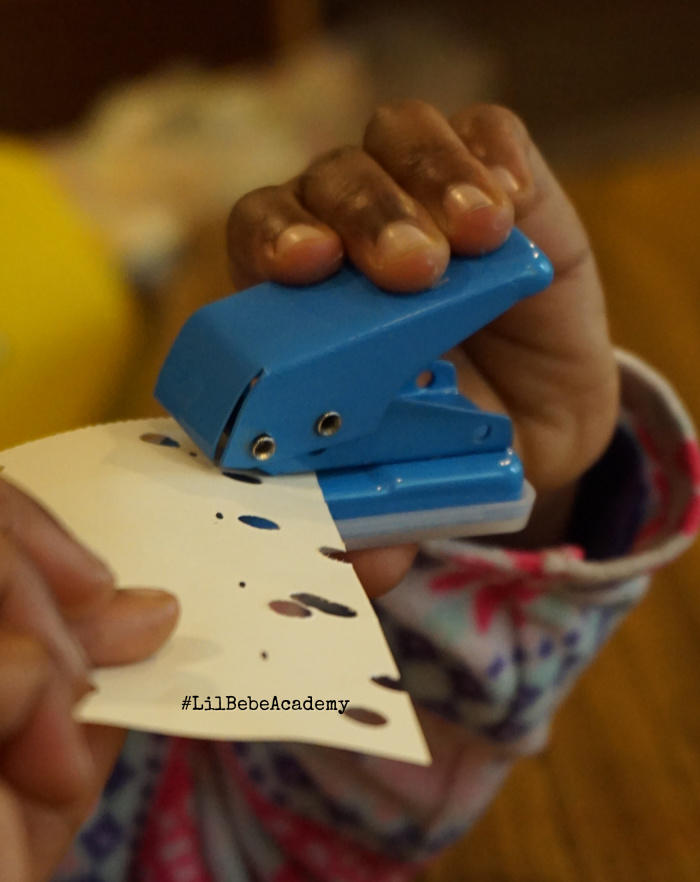
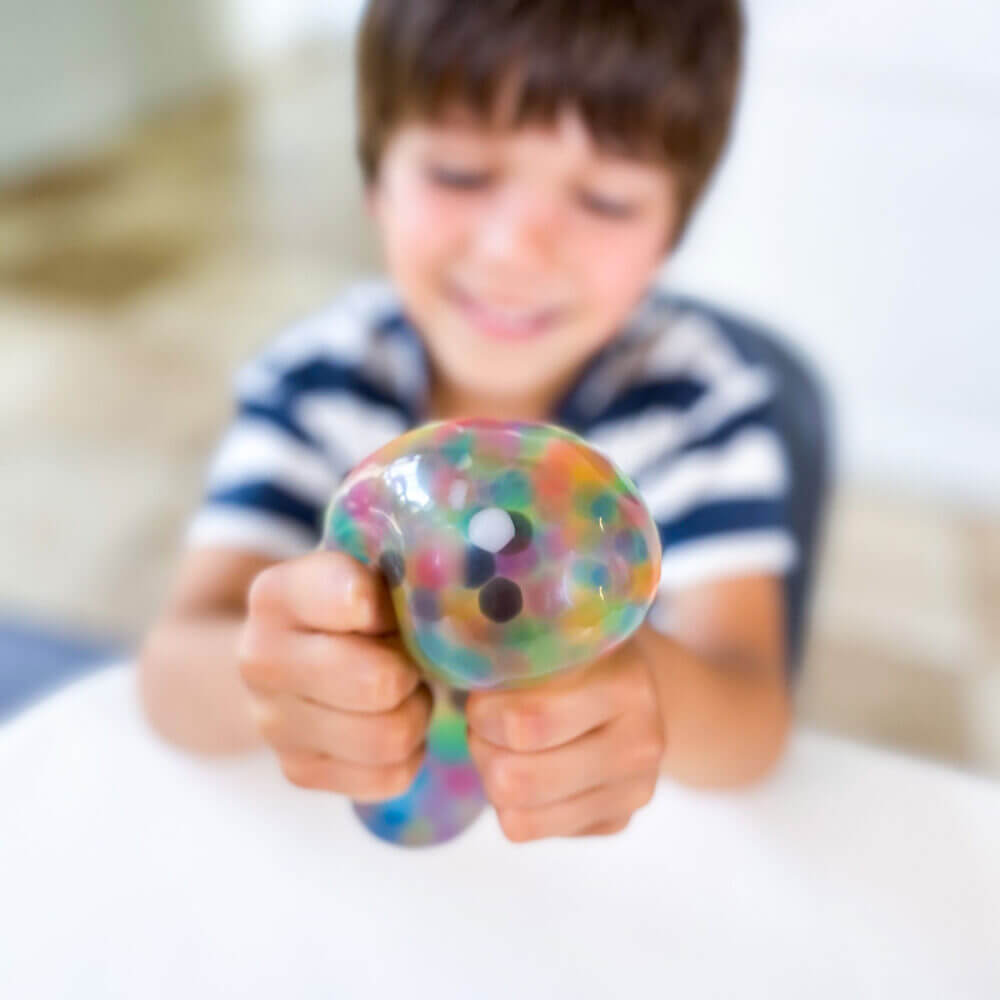
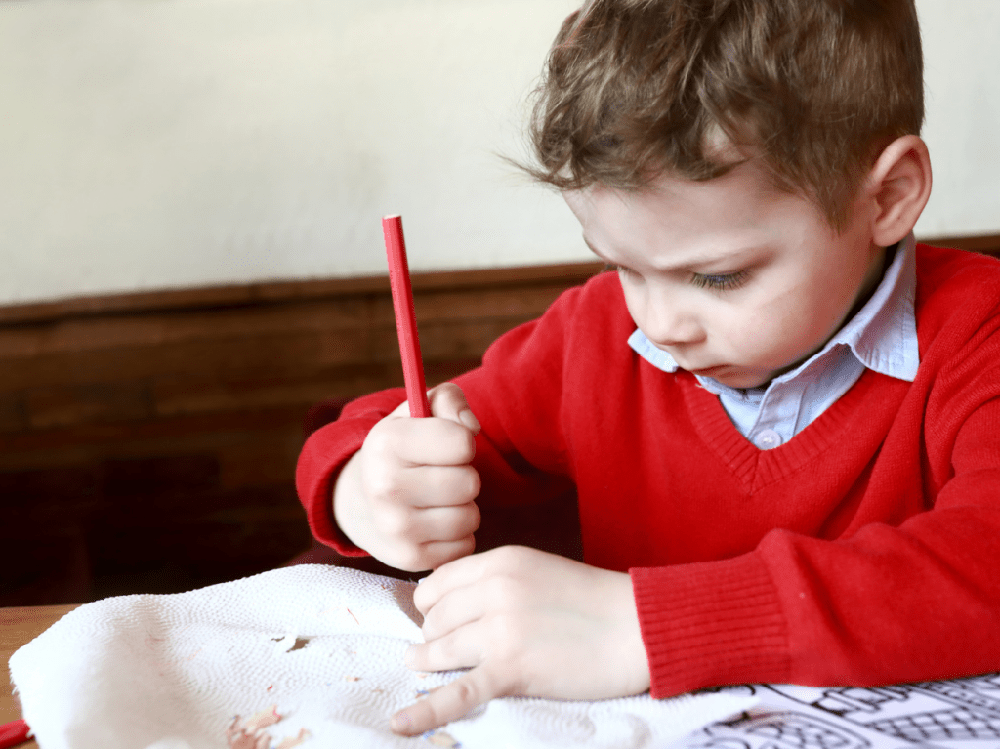
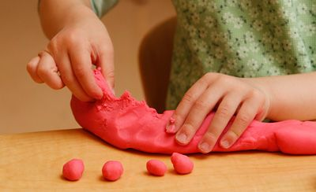
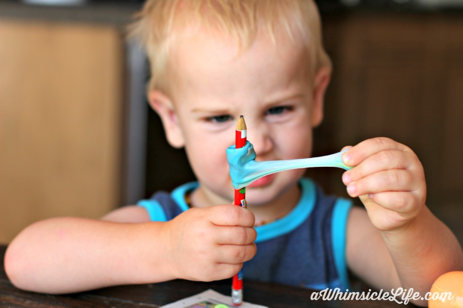

Many children who avoid writing tasks are not being difficult. Their hands simply are not ready yet.
Working with learners of diverse needs, I noticed early on that the struggle was not always about reading or math. What stood out, more than I expected, was difficulty with writing. Not because they did not know their letters. But because their bodies were simply not ready yet.
I saw learners bargain just to skip writing time. "Can I play first? I need to go to the bathroom. I'm tired." Some could not even tell me what was wrong. They just shut down. Laid on the floor. Threw tantrums the moment a pencil came out. Others would start writing and then slowly fall apart. Letters getting messier, grip getting tighter, frustration building.
For a long time I thought some of these children were just being difficult. But the more I watched, the more I realized they were not refusing because they did not want to. They were refusing because their hands genuinely could not keep up.
If you are a special educator, a parent, or an occupational therapist supporting a child who struggles with gripping, writing, zipping a bag, or opening a water bottle, this post is for you. Here are five signs that hand strengthening may be exactly what they need.

Watch for inconsistent letter formation and slowing pace. These are often the first visible signs of hand muscle fatigue.
The child starts writing and things look fine. Then the letters get inconsistent, the lines get shakier, and they start saying they are tired. That is not boredom. That is their hand muscles running out of steam.
This happens because the extrinsic flexor muscles, the long muscles running from the forearm into the fingers, have not built enough endurance to sustain the repeated motion that writing demands. When they fatigue, the body compensates by pulling in the whole arm or shoulder. The child is not being dramatic. Their body is genuinely working harder than it should be.
Pushing past this point does more harm than good. Build the endurance first, before the pencil even comes out.
A simple and effective way to do this is through repeated squeeze and release activities like hole punching, squeezing a stress ball, or pressing into putty. These directly target those muscles in a way that feels like play rather than work, and they are easy to build into the start of any session.

Hole punching builds hand endurance through repeated squeeze and release.

Squeezing a stress ball is a quick and easy warm-up before any writing task.

Consistent avoidance of fine motor tasks is not always about interest. It is often about discomfort.
Consistent avoidance of fine motor tasks is easy to write off as disinterest. But it is often a quiet sign that these activities cause real discomfort. Their hands tire quickly, the grip hurts, the task feels impossible. So they stop trying.
This happens when the intrinsic hand muscles, the small muscles inside the hand, are underdeveloped. Tasks that require sustained grip feel physically effortful in a way young children cannot articulate. They just know it does not feel good, so they leave.
These children are not being picky. They need to be equipped before they are expected to perform.
Before jumping into cutting or drawing, warm the hand up first. Something as simple as letting the child squeeze and shape soft playdough for a few minutes before the activity can make a noticeable difference in how they approach the task. It prepares the muscles without adding pressure.

Squeezing playdough before a fine motor task warms up the hand without pressure.

Structured playdough mats give the warm-up a clear purpose and progression.

A whole-fist pencil grip past age 5 is a sign the underlying pinch muscles may need more development.
If a child is holding their pencil like a microphone, whole fist wrapped around it with the palm pressing down, that is a sign worth paying attention to.
This happens because the thenar muscles at the base of the thumb, which control the opposition movement needed for a proper 3-finger grip, have not yet developed the strength to sustain it. The child defaults to a whole-hand grip because it feels more stable.
This is the sign I have seen get overlooked the most. It is tempting to assume the child just has not been shown the right technique. And yes, sometimes that is true. But in my experience, showing the correct grip without first building the muscle underneath does very little. The muscle has to be there before the pattern can stick.
Practicing the 3-finger pinch against gentle resistance, like clipping a clothespin or pinching pieces of playdough, is one of the most effective ways to prepare the hand before introducing the pencil again.

Clothespin clipping naturally builds the 3-finger pinch needed for pencil grip.

Pinching playdough targets the thenar muscles at the base of the thumb.

Frequently dropping small objects is not clumsiness. It is often a sign of underdeveloped pinch strength.
Please do not label these children as clumsy. A learner who consistently drops snack pieces, struggles to pick up coins, or cannot button their shirt, especially when it happens frequently, is showing a sign that deserves attention.
This happens because the intrinsic muscles responsible for isolated finger control and pinch strength are still developing. Without adequate strength in these muscles, handling small objects requires far more effort and concentration than it should.
I had a learner who was always messy during snack time. For a while I thought it was just her personality. She was a lively kid. But when I looked closer, I realized she could not reliably pick up her small biscuits without dropping them. It was not messiness. Her pinch strength simply was not there yet.
Giving her regular pinching activities with playdough, small pegs, or soft putty before and during the school day made a gradual but real difference over time.

Picking up and placing small pegs builds isolated finger control and pinch strength.

Pinching and pulling soft putty targets the intrinsic muscles needed for handling small objects.

Inconsistent letter sizing, skipped lines, and frequent pauses in older children are signs of poor hand endurance, not laziness.
Most people assume hand strengthening is only for toddlers and preschoolers. It is not. Older children can still show real gaps and it does not mean they are lazy or have not practiced enough.
When the hand muscles do not receive progressive resistance training in the early years, they plateau. The child can write but not for long and not consistently. The endurance is simply not there for extended tasks.
I had a Grade 4 learner, nine years old, who could not maintain consistent letter formation across a full page. The first few lines would look fine. Then the sizing went off, the spacing collapsed, he would skip the lines entirely, and I could see his hand shaking and pausing more frequently as the task went on. What looked like carelessness was fatigue.
For older children like him, the approach needs to shift toward structured progressive resistance, things like theraputty, hand grippers, and rubber band exercises, done consistently over several weeks to build the kind of endurance that writing at the upper grade levels actually demands.

Theraputty provides graded resistance that can be increased as the child's strength grows.

A structured resistance program with tools like hand grippers builds endurance for older learners.
Hand strengthening is not one-size-fits-all. The most effective approach is progressive, starting where the child actually is, not where we expect them to be.
Basic whole-hand grip, pinch strength, and finger coordination through playdough. Includes a resistance guide for age-appropriate dough selection.
Find Level 1 here →Pinch grasp and hand strength through clothespin clipping. Color and animal-themed cards make it feel like play. IEP-ready goals included.
Find Level 2 here →Progressive dot patterns that build hand endurance through hole punching. Eight dot sizes where bigger is easier and smaller is harder.
Find Level 3 here →8-week structured resistance program. Four phases, 24 sessions, full exercise cards, session log, and three IEP goals.
Find Level 4 here →The Complete 4-Level Bundle includes everything at 10% off.
Get the bundle here →Hand strength builds slowly, one squeeze, one clip, one punch at a time. The children showing these signs are not behind forever. They just need the right starting point and consistent practice.
I know how little time there is in a classroom or therapy session. These resources were made to take the preparation off your plate so you can spend that time where it counts, with the child in front of you.
Most commonly it is underdeveloped intrinsic and extrinsic hand muscles caused by limited fine motor play experience, developmental delays, low muscle tone, or simply not enough of the right kind of practice at the right time.
Between ages 4 and 6 for most children. A child still using a whole-fist grip past age 5 is worth observing more closely.
With around 3 sessions per week, most children show noticeable improvement within 6 to 8 weeks. Progress is gradual but cumulative.
Yes. Playdough, clothespin games, and hole punching are all safe for home use. For older children using resistance tools, a structured program with clear instructions is recommended.
Intrinsic muscles are inside the hand and control fine, precise movements. Extrinsic muscles originate in the forearm and control overall grip and finger flexion. Both need to be developed, which is why a progressive approach across age levels matters.
All resources are available at inclusivematerials.com and our Etsy shop. © Inclusive Materials. All rights reserved.